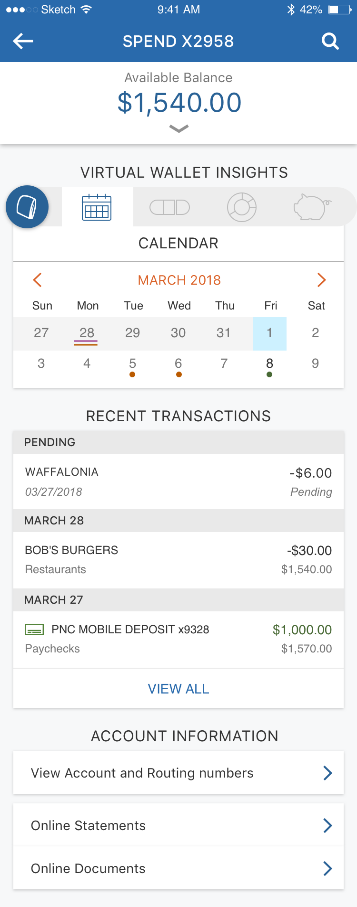
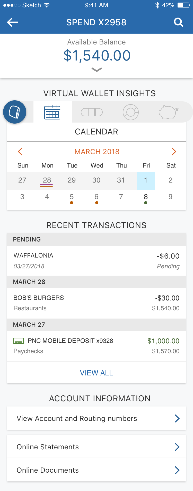

Enhancing mobile account pages
Challenge
Redesign account pages in PNC’s mobile app to incorporate new data and content.
Outcome
A newly designed interaction with banking tools in account pages, as well as improved visual hierarchy for all account pages.
RoleDesign lead
TeamProduct manager (1), Developer team
Overview
This project was part of a larger initiative to combine PNC's two mobile apps: 1) one for all PNC accounts, and 2) one specifically for Virtual Wallet accounts and banking tools.

The Virtual Wallet app (left) supports exclusive tools not supported in the main PNC app (right). To bring VW tools to all PNC customers, my team worked with the PNC Mobile team to incorporate the tools into their app.
My task was to redesign their pre-existing Account Activity experience, which would help transition VW customers smoothly into a different app, and for other customers to discover the new tools at their disposal.
Research
Initial Interviews
I sought to learn how people generally used Account Activity and banking tools. These were informal interviews with colleagues, friends and family. People viewed Account Activity like a dashboard for the state of their money, and the actions they can take on it.

Target User
Defining a target user guided our design decisions (who benefits most from extra banking tools? what kind of customer are we appealing to?).

Profile
- Age: 30-40
- Middle-upper class
- Tech-savvy
User Needs
- Be financially responsible (i.e. pay bills)
- Save for short- and long-term financial goals
This user is often busy and wants to bank on-the-go. He likes the Virtual Wallet tools, but he only has the main PNC app and didn't want to download multiple apps for one bank.
If I could see all my accounts in one place, and still have the VW tools, I'd use them all the time.
Information Structure
Next I sought to learn about customers' mental models of their VW tools and accounts, using various tasks, in order to implement structure and hierarchy.


2 rounds of 5 card sorts revealed strong correlations between features (account balance & transactions: 80%), and between featues and accounts (goals with Savings: 100%).


8 out of 10 users left "Balances" and "Transactions" on the first screen in paper prototype tests, where I asked users to rearrange content to suit their needs.
Overall, users associated spending tools with checking accounts, and investment tools with savings. Proactive sorting by users also revealed certain data they valued more, like account balance and transactions.
Design
Development
With higher-fidelity mockups, I began testing navigation, UI, and interactions that would make users feel capable, efficient and delighted when banking.
Below are some ideas I explored and tested (conducted by a research team, testing for task completion, ease of use and visual appeal).
Exploration: Carousel
- Task completion: 66%
- Ease of navigation: 4.9/7
- Visual Appeal: 6.1/7

Exploration: Tabbed Pages
- Task completion: 80%
- Ease of navigation: 5.5/7
- Visual Appeal: 5.4/7
Exploration: Tool Bar
- Task completion: 100%
- Ease of navigation: 6.5/7
- Visual Appeal: 6.2/7

 

Everything I need is on one page. I could easily manage the account without leaving this screen.
66% of users most preferred versions with the "tool bar" concept, across multiple A/B tests where users completed a set of tasks in one version and then were shown other options.
Iconography
As the icon version was testing best, I began further developing the new tool icons. I matched them to existing icons in the app, but opted to add color (borrowed from VW brand guidelines) to add visual delight in addition to familiar branding.
Through feedback gathered from stakeholders and users, I learned what parts worked well and continued to refine them. Some highlights include the enlarged account balance, the tool bar component, and the single page layout.
Final Screens
Below are the final pages for each of VW's account pages. Each account serves a different role (checking, checking with interest, high-yield savings, and credit card) so they feature unique tool sets for their purposes.


User Flow

This flow shows the key Account Activity user flow. Below, I provide more detail on how and why each screen was changed.
Account Page
- Clearer visual hierarchy
- Includes new "tool bar" component, icons and interaction


Account Details
- Reduced clutter by hiding less-used information
- Lines added for visual grouping


Transactions
- VW-exclusive “Category” detail
- Full width to increase real estate usage
Transactions Details
- “Edit category” functionality
- Layout that allows for future detail items
Results
- New visual page layout applied to account pages for 8.3 million users
- Tool bar design introduced for 4.8 million Virtual Wallet accounts
- Learning to navigate relationships between coexisting products
- Learning to work with the constraints of pre-existing patterns
- Improved ability to rapidly prototype with Sketch and InVision Studio